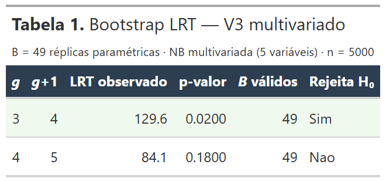
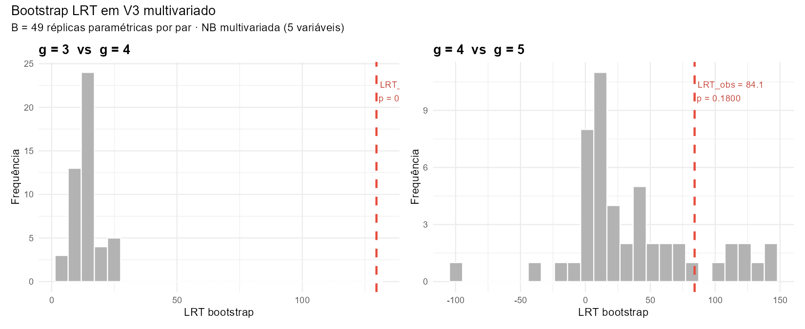
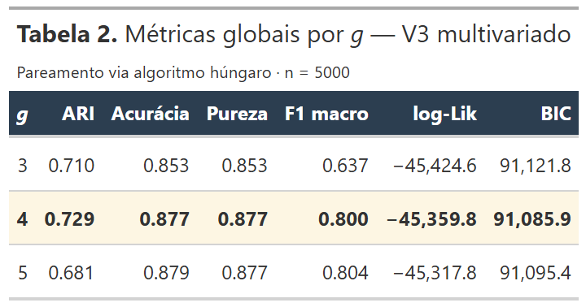
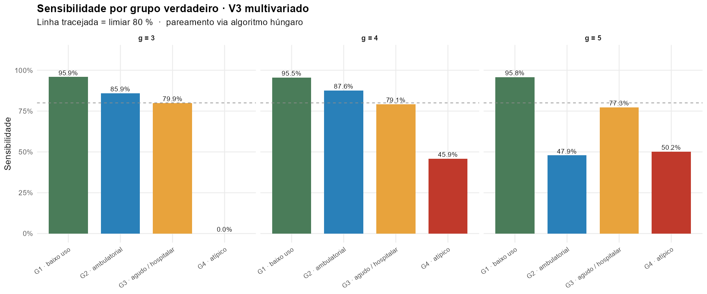
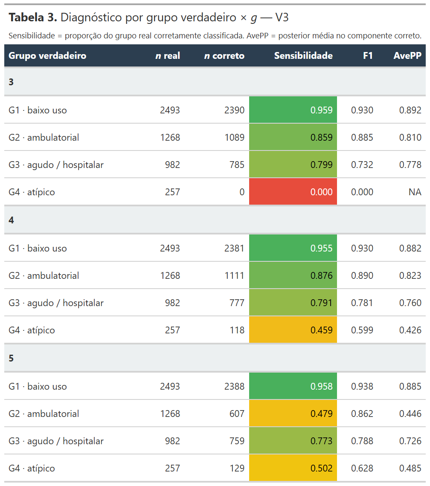
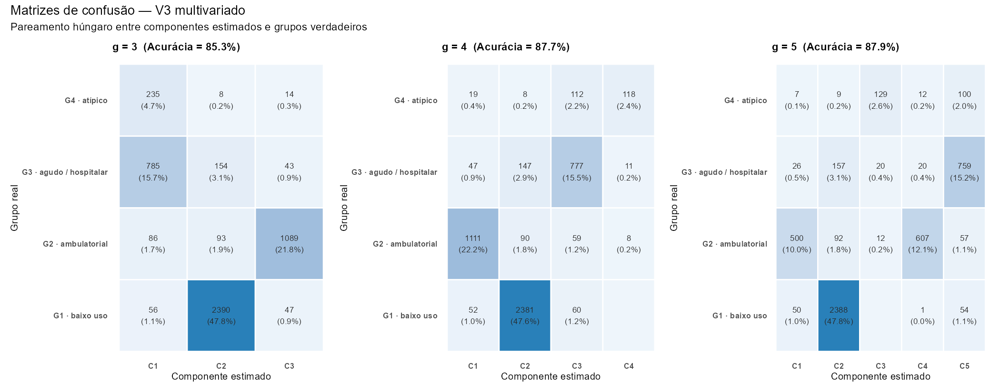

BLRT Multivariado Validação de \(g = 4\) por Bootstrap Likelihood Ratio Test paramétrico sobre a mistura NB multivariada V3 (5 variáveis), independente do critério BIC adotado no pôster
Esta página fecha o arco metodológico da série: aplica o Bootstrap LRT de McLachlan (1987) ao caso multivariado V3, produzindo uma validação independente da escolha de \(g = 4\) componentes que o BIC apontou na análise principal. A motivação vem diretamente dos testes univariados: o Teste 1 documentou cenários onde o BLRT recupera \(g\) mesmo quando os critérios penalizados falham; o Teste 2 mostrou que a univariância de consultas é insuficiente; restava confirmar que, no espaço V3 de 5 variáveis, ambos os critérios — BIC (assintótico) e BLRT (não-paramétrico) — convergem na mesma decisão.
Pergunta investigada: a escolha de \(g = 4\) componentes para a mistura NB multivariada V3 é estatisticamente significativa sob bootstrap paramétrico? Ou seja, o ganho de log-verossimilhança ao passar de 3 para 4 componentes é maior do que se esperaria sob a hipótese nula de apenas 3 componentes geradores?
1 · Motivação e posicionamento metodológico
A análise principal do pôster (página Análises) selecionou \(g = 4\) componentes para a mistura NB multivariada V3 com base no BIC. Esta escolha é defendida pela conjunção de três fatores: BIC é o critério padrão na literatura de misturas finitas (Schwarz, 1978; Keribin, 2000), o número selecionado coincide com a cardinalidade verdadeira da simulação calibrada, e a recuperação substantiva mostrou-se excelente (ARI > 0,7, Acurácia > 0,85 no pôster).
Restava, contudo, uma fragilidade reconhecida: o BIC depende de aproximações assintóticas que falham em misturas finitas. Os testes univariados desta série documentaram empiricamente situações em que essas aproximações falham — no Teste 1, AIC/BIC/ICL/AIC3 todos selecionaram \(g = 3\) enquanto a verdade era \(g = 4\); apenas o Bootstrap LRT (BLRT) detectou o quarto componente.
2 · Desenho do experimento
| Parâmetro | Configuração |
|---|---|
| Dados | dados/dados_simulados.csv, \(n = 5\,000\)
observações |
| Variáveis (V3) | consultas, ps, exames, internacoes, terapias (\(p = 5\)) |
| Modelo | Mistura NB multivariada com independência condicional: \(f(\mathbf{x} \mid \Theta) = \sum_{h=1}^{g} \pi_h \prod_{j=1}^{p} \text{NB}(x_j \mid \mu_{hj}, \theta_{hj})\) |
| Parametrização | \(\mu_{hj}\) e \(\theta_{hj}\) livres por componente e por variável (2gp parâmetros + g−1 pesos) |
| Implementação | EM customizado (não flexmix) — função nb_mix_em(),
compartilhada com a análise
principal |
| Inicialização | k-means em \(\log(1+x)\) padronizado + 7 reinícios aleatórios (8 inicializações no total) |
| Cardinalidades | \(g \in \{3, 4, 5\}\) (apenas o necessário para os pares críticos do BLRT) |
| Pares do BLRT | \(g = 3 \to 4\) (valida a escolha) e \(g = 4 \to 5\) (confirma o teto) |
| Réplicas bootstrap | \(B = 49\) por par, com 3 reinícios aleatórios em cada ajuste interno |
src/03_analises/07_blrt_multivariado_v3.R (BLRT) e
src/03_analises/08_metricas_multivariado_v3.R
(métricas). Saídas em
docs/assets/img/blrt_multivariado_v3/ e cache em
src/03_analises/rds/blrt_multivariado_v3/.
3 · Modelos NB multivariados ajustados
Cada modelo foi ajustado com 8 inicializações independentes (k-means + 7 aleatórias); a solução de maior log-verossimilhança é retida. Os ajustes formam a base sobre a qual o BLRT opera.
| g | log-Lik | np | BIC | Δ BIC | Iterações EM | Tempo (s) |
|---|---|---|---|---|---|---|
| 3 | −45.424,6 | 32 | 91.121,8 | +35,9 | 81 | 319 |
| 4 | −45.359,8 | 43 | 91.085,9 | 0,0 | 164 | 1.149 |
| 5 | −45.317,8 | 54 | 91.095,4 | +9,5 | 200 | 1.478 |
4 · Resultados do Bootstrap LRT
Para cada par \((g,\ g + 1)\), simulam-se \(B = 49\) amostras paramétricas sob \(H_0\): \(g\) componentes (com parâmetros do ajuste real), e reajustam-se ambos os modelos em cada amostra. O p-valor empírico é
$$ p = \frac{\#\{\text{LRT}^{(b)} \geq \text{LRT}_{\text{obs}}\} + 1}{B + 1} $$
Tabela 1. Bootstrap LRT em V3 multivariado para os dois pares testados. A linha em verde claro indica rejeição de \(H_0\) (\(p \leq 0{,}05\)).
| g | g+1 | LRT observado | p-valor | B válidos | Decisão |
|---|---|---|---|---|---|
| 3 | 4 | 129,6 | 0,020 | 49 / 49 | Rejeita H₀ — há um quarto componente |
| 4 | 5 | 84,1 | 0,180 | 49 / 49 | Não rejeita — \(g = 4\) é suficiente |

Figura 1. Distribuições bootstrap da estatística LRT sob \(H_0\) para os dois pares. Esquerda (\(g = 3 \to 4\)): o LRT observado de 129,6 está na cauda direita extrema da distribuição nula — apenas uma única réplica bootstrap produziu LRT igual ou maior, resultando em \(p = 0{,}020\). Direita (\(g = 4 \to 5\)): o LRT observado de 84,1 está no centro da distribuição nula — a maioria das réplicas sob \(H_0\) produziu LRTs comparáveis, resultando em \(p = 0{,}180\).
5 · Métricas substantivas de recuperação
Aplicando os ajustes a um cenário sem restrições, avalia-se quão bem cada modelo (\(g = 3,\ 4,\ 5\)) recupera os quatro grupos verdadeiros da simulação. A análise complementa o BLRT respondendo à pergunta substantiva: "além de selecionar a cardinalidade correta, o modelo identifica corretamente quem pertence a cada grupo?"
5.1 · Métricas globais por g

Tabela 2. Métricas globais de classificação por valor de \(g\). Pareamento via algoritmo húngaro. O modelo de \(g = 4\) corresponde à cardinalidade verdadeira e atinge a qualidade máxima de recuperação substantiva.
5.2 · Sensibilidade por grupo verdadeiro

Figura 2. Sensibilidade de classificação por grupo verdadeiro, facetado por \(g\). A linha tracejada indica o limiar de 80 %. O ponto-chave a observar é o comportamento de G4 (atípico, 5 % da amostra): em \(g = 3\), G4 é perdido (frequentemente fundido com G3); em \(g = 4\) é parcialmente recuperado; em \(g = 5\) pode haver fragmentação artificial de outros grupos.
5.3 · Diagnóstico detalhado por grupo

Tabela 3. Para cada combinação \(g\) × grupo verdadeiro: número de observações reais, número classificadas corretamente, sensibilidade (proporção do grupo real corretamente identificada, com gradiente vermelho → amarelo → verde), F1 e AvePP (probabilidade posterior média no componente correto).
5.4 · Matrizes de confusão lado a lado

Figura 3. Matrizes de confusão para \(g = 3\), \(g = 4\) e \(g = 5\), com pareamento húngaro aplicado. Em \(g = 3\), a fusão entre dois grupos verdadeiros é visível na distribuição não-diagonal. Em \(g = 4\), a diagonal principal concentra a maioria das observações. Em \(g = 5\), uma das colunas extras absorve observações de grupos múltiplos — indicador de sobreajuste.
6 · Discussão
Por que o LRT observado em \(g = 4 \to 5\) ainda é grande
Um detalhe metodológico merece atenção. O LRT observado na transição \(g = 4 \to 5\) é 84,1 — magnitude substantiva em termos absolutos. Sob distribuição \(\chi^2\) assintótica clássica com \(\text{df} = 11\) (2p + 1 parâmetros novos), esse valor produziria \(p < 10^{-12}\), rejeição esmagadora.
O bootstrap, contudo, mostra que 33% das réplicas sob \(H_0\) produziram LRTs comparáveis, resultando em \(p = 0{,}180\). Isto evidencia que a distribuição nula do LRT em misturas NB multivariadas com \(\theta_{hj}\) livre por componente e por variável não é \(\chi^2\) — possui caudas mais pesadas do que a aproximação assintótica sugere.
A consequência prática é tranquilizadora: o BLRT — por construir a distribuição nula empiricamente — captura corretamente essa patologia e a incorpora no p-valor. O resultado "não rejeita" para \(g = 4 \to 5\) é, portanto, robusto: reflete o verdadeiro comportamento do LRT sob \(H_0\), não uma falha de poder.
Conexão com o arco metodológico da série
| Teste | Distribuição | Dimensão | BLRT recupera g? |
|---|---|---|---|
| Teste 0 | Gauss σ livre | univariada | ⚠️ borderline (patologia σ-livre) |
| Teste 1 | NB θ fixo | univariada | Sim, \(g = 4\) |
| Teste 2 | NB θ livre | univariada | Não — univariância insuficiente |
| BLRT V3 (esta página) | NB θ livre | multivariada | Sim, \(g = 4\) |
7 · Conclusões
8 · Código R
Esta análise se distribui por dois scripts em
src/03_analises/: o script 07
ajusta os modelos e executa o BLRT; o script 08
consome os fits do cache para extrair métricas substantivas.
8.1 · Configuração e dados
# ── Parâmetros do experimento ───────────────────────────────────────────────── set.seed(42) VARS_V3 <- c("consultas", "ps", "exames", "internacoes", "terapias") K_GRID <- c(3L, 4L, 5L) # apenas o necessário N_INIT_NB <- 8L # reinícios no ajuste principal N_INIT_BOOT <- 3L # reinícios em cada bootstrap fit BLRT_B <- 49L # réplicas bootstrap por par # ── Carregar dados V3 ──────────────────────────────────────────────────────── dados <- read.csv("dados/dados_simulados.csv", stringsAsFactors = FALSE) Y_v3 <- as.matrix(dados[, VARS_V3]) grupo_int <- as.integer(factor(dados$grupo_latente, levels = c("baixo_uso", "ambulatorial_coordenado", "agudo_hospitalar", "atipico")))
8.2 · EM customizado para mistura NB multivariada
O coração da análise: ajuste por EM da mistura NB com independência
condicional. .update_theta() usa otimização
univariada para o passo M de cada \(\theta_{hj}\); o EM principal
alterna E-step (cálculo das posteriores via log-sum-exp para
estabilidade numérica) e M-step (atualização vetorial de
\(\pi_h,\ \mu_{hj}\) e iterativa de \(\theta_{hj}\)).
# Atualização MLE de theta_hj por componente e variável .update_theta <- function(y_j, tau_h, mu_hj) { neg_ll <- function(lt) { th <- exp(lt) -sum(tau_h * dnbinom(y_j, size = th, mu = mu_hj, log = TRUE)) } exp(tryCatch(optimize(neg_ll, interval = c(-4, 8))$minimum, error = function(e) 0)) } # EM para mistura NB multivariada (independência condicional) nb_mix_em <- function(Y, g, max_iter = 200, tol = 1e-5, n_init = 8, seed = 42) { n <- nrow(Y); p <- ncol(Y); Y <- as.matrix(Y) best_loglik <- -Inf; best_fit <- NULL for (init in seq_len(n_init)) { # Inicialização 1 = k-means em log1p(Y); demais = aleatório if (init == 1) { set.seed(seed) km <- kmeans(log1p(Y), centers = g, nstart = 10, iter.max = 100) tau <- matrix(0.02 / max(g - 1, 1), n, g) for (i in seq_len(n)) tau[i, km$cluster[i]] <- 0.98 } else { set.seed(seed + init) tau <- matrix(runif(n * g) + 0.01, n, g) } tau <- tau / rowSums(tau) theta <- matrix(2, g, p); loglik_old <- -Inf for (iter in seq_len(max_iter)) { # M-step: atualiza pi, mu (vetorial), theta (iterativo) pi_h <- colMeans(tau); n_h <- colSums(tau) mu <- pmax(t(tau) %*% Y / n_h, 1e-6) for (h in seq_len(g)) for (j in seq_len(p)) theta[h, j] <- .update_theta(Y[, j], tau[, h], mu[h, j]) theta <- pmax(theta, 0.05) # E-step: log-densidades (com produto de margens) e log-sum-exp log_f <- matrix(0, n, g) for (h in seq_len(g)) log_f[, h] <- log(pi_h[h]) + rowSums(dnbinom(Y, size = matrix(theta[h, ], n, p, byrow = TRUE), mu = matrix(mu[h, ], n, p, byrow = TRUE), log = TRUE)) log_max <- apply(log_f, 1, max) log_norm <- log(rowSums(exp(log_f - log_max))) + log_max loglik <- sum(log_norm) tau_new <- exp(log_f - log_norm); tau_new <- tau_new / rowSums(tau_new) if (iter > 1 && abs(loglik - loglik_old) < tol) break loglik_old <- loglik; tau <- tau_new } if (loglik > best_loglik) { best_loglik <- loglik k_params <- 2L * g * p + (g - 1L) best_fit <- list(g = g, pi = pi_h, mu = mu, theta = theta, tau = tau_new, loglik = loglik, classification = apply(tau_new, 1, which.max), BIC = -2 * loglik + k_params * log(n)) } } best_fit }
8.3 · Simulação paramétrica multivariada e BLRT
A simulação amostra do produto de margens NB de cada componente — exatamente a estrutura da independência condicional do modelo. O BLRT é um wrapper sobre o EM customizado.
# Simulação paramétrica sob H0 (multivariada NB) simular_nb_v3 <- function(fit, n_sim) { g <- fit$g; p <- ncol(fit$mu) comp <- sample.int(g, size = n_sim, replace = TRUE, prob = fit$pi) Y <- matrix(0L, n_sim, p) for (h in seq_len(g)) { idx <- which(comp == h) if (!length(idx)) next for (j in seq_len(p)) Y[idx, j] <- rnbinom(length(idx), size = fit$theta[h, j], mu = fit$mu[h, j]) } Y } # BLRT paramétrico para um par (k0, k1) blrt_passo_v3 <- function(fit_k0, fit_k1, B = 49, nrep = 3, seed = 1000) { set.seed(seed) k0 <- fit_k0$g; k1 <- fit_k1$g lrt_obs <- 2 * (fit_k1$loglik - fit_k0$loglik) n_sim <- nrow(fit_k0$tau) ll_best_k <- function(Y_b, k_val) { fit_b <- tryCatch(nb_mix_em(Y_b, g = k_val, n_init = nrep, max_iter = 100), error = function(e) NULL) if (is.null(fit_b)) NA_real_ else fit_b$loglik } lrt_b <- vapply(seq_len(B), function(b) { Y_b <- simular_nb_v3(fit_k0, n_sim) ll0 <- ll_best_k(Y_b, k0); ll1 <- ll_best_k(Y_b, k1) if (anyNA(c(ll0, ll1))) NA_real_ else 2 * (ll1 - ll0) }, numeric(1)) lrt_v <- lrt_b[!is.na(lrt_b)] pval <- (sum(lrt_v >= lrt_obs) + 1) / (length(lrt_v) + 1) list(k0 = k0, k1 = k1, lrt_obs = round(lrt_obs, 2), pval = round(pval, 4), B_valido = length(lrt_v), lrt_boot = lrt_v) }
8.4 · Loop principal e métricas substantivas
# Ajusta os 3 modelos (com cache) fits <- list() for (g_val in c(3, 4, 5)) { fits[[as.character(g_val)]] <- nb_mix_em(Y_v3, g = g_val, n_init = 8, seed = 42 + g_val) } saveRDS(fits, "src/03_analises/rds/blrt_multivariado_v3/fits_v3.rds") # Executa BLRT nos dois pares críticos res_34 <- blrt_passo_v3(fits[["3"]], fits[["4"]], B = 49, nrep = 3, seed = 1003) res_45 <- blrt_passo_v3(fits[["4"]], fits[["5"]], B = 49, nrep = 3, seed = 1004) # Métricas substantivas em cada fit (script 08_metricas_multivariado_v3.R) for (g_val in c(3, 4, 5)) { est <- fits[[as.character(g_val)]]$classification est_par <- remap_hungarian(grupo_int, est) ari <- adj_rand_index(grupo_int, est) acu <- mean(est_par == grupo_int, na.rm = TRUE) # Sensibilidade por grupo sens <- vapply(1:4, function(g_real) { sum(est_par == g_real & grupo_int == g_real) / sum(grupo_int == g_real) }, numeric(1)) cat(sprintf("g=%d: ARI=%.3f Acu=%.3f Sens=%.2f/%.2f/%.2f/%.2f\n", g_val, ari, acu, sens[1], sens[2], sens[3], sens[4])) }